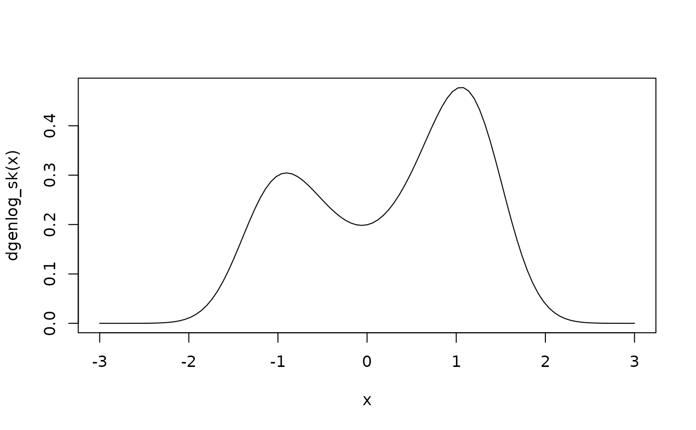

The Generalized logistic distribution with skewness
distrib_sk.RdDensity, distribution function, quantile function and random generation a generalized logistic distribution with skewness.
Usage
pgenlog_sk(
q,
a = sqrt(2/pi),
b = 0.5,
p = 2,
mu = 0,
skew = 0.5,
lower.tail = TRUE
)
dgenlog_sk(x, a = sqrt(2/pi), b = 0.5, p = 2, mu = 0, skew = 0.5)
qgenlog_sk(
k,
a = sqrt(2/pi),
b = 0.5,
p = 2,
mu = 0,
skew = 0.5,
lower.tail = TRUE
)
rgenlog_sk(n, a = sqrt(2/pi), b = 0.5, p = 2, mu = 0, skew = 0.5)Arguments
- a, b, p
parameters \(\le 0\), with restrictions.*
- mu
mu parameter
- skew
skewness parameter limited to the interval (-1, 1)
- lower.tail
logical; if TRUE (default), probabilities are \(P[X \le x]\) otherwise, \(P[X > x]\).
- x, q
vector of quantiles.
- k
vector of probabilities.
- n
number of observations. If length(n) > 1, the length is taken to be the number required
Value
dgenlog_sk gives the density, pgenlog_sk gives the distribution function,
qgenlog_sk gives the quantile function, and rgenlog_sk generates random deviates.
The length of the result is determined by n for rgenlog_sk, and is the maximum of the lengths
of the numerical arguments for the other functions.
Details
The used distribution for this package is given by: $$f(x) = 2*((a + b*(1+p)*(abs(x-mu)^p))*exp(-(x-mu)*(a+b*(abs(x-mu)^p))))/ ((exp(-(x-mu)*(a + b* (abs(x-mu)^p)))+1)^2) * ((exp(-(skew*(x-mu))*(a+b*(abs(skew*(x-mu))^p)))+1)^(-1)) $$
The default values for a, b, p and mu produces a function with mean 0 and variance close to 1.
*Restrictions:
If p equals to 0, b or a must be 0 otherwise there is identifiability problem.
The distribution is not defined for a and b equal to 0 simultaneously.
References
Rathie, P. N. and Swamee, P. K (2006) On a new invertible generalized logistic distribution approximation to normal distribution, Technical Research Report in Statistics, 07/2006, Dept. of Statistics, Univ. of Brasilia, Brasilia, Brazil.
Azzalini, A. (1985) A class of distributions which includes the normal ones. Scandinavian Journal of Statistics.
Examples
pgenlog_sk(0.5)
#> [1] 0.512874
curve(dgenlog_sk(x), xlim = c(-3,3))

rgenlog_sk(100)
#> [1] 0.12247395 0.90435157 0.48279731 0.88564644 0.49646361 1.26186121
#> [7] 0.98988890 1.35625905 -1.68172161 1.39396273 2.07306802 0.45760000
#> [13] -0.17283140 1.12874571 0.70609585 0.82617651 1.31692838 0.65978939
#> [19] -0.62677627 1.48646541 1.33863630 -0.64298431 0.04715436 1.11757804
#> [25] -1.07873673 -0.82821709 -0.92740401 0.89192668 1.31179547 1.51320055
#> [31] 0.61969357 0.68685802 0.94454405 -0.65673995 -1.39457877 1.45749253
#> [37] -1.26570928 2.09582489 0.77412296 -0.90115981 1.45619929 -1.43804848
#> [43] 0.72915886 -0.68425487 1.44646644 1.22398682 0.97094585 -0.74315619
#> [49] 1.03026130 -0.75310120 0.29170717 -0.29849971 0.66371977 -0.62966615
#> [55] 0.32342272 1.48265911 1.73877848 1.22445496 1.43623703 0.69807017
#> [61] 1.12471530 2.03111307 0.99450830 -0.76037855 -0.47736701 1.01719609
#> [67] 1.33677394 -0.67904454 -1.83609908 1.57910371 0.21386110 1.07759612
#> [73] 0.90204440 0.07222477 -0.21069513 1.05140704 0.89430064 -1.20526787
#> [79] 1.31071279 -1.23881816 1.30272010 -1.12537337 0.40306750 -0.64774921
#> [85] 0.94266025 -0.93051396 1.62128484 -0.34848794 -0.16012017 1.39250672
#> [91] 1.24458420 -1.14620221 1.44571226 1.12412732 -0.05055590 2.36716793
#> [97] -0.22016494 1.59569070 -0.75644893 -1.47439076
qgenlog_sk(0.95)
#> [1] 1.607905